Mở đầu
Trà Vinh là một tỉnh thuộc Đồng bằng sông Cửu Long, nổi bật với nét văn hóa Khmer đặc sắc, nhiều chùa cổ và các điểm du lịch sinh thái yên bình.
Trong bài viết này, những địa điểm tiêu biểu của Trà Vinh được tóm gọn theo cách ngắn gọn, dễ đọc hơn để người xem nhanh chóng nắm được địa chỉ, điểm nổi bật và lý do nên ghé thăm.
1. Ao Bà Om
📍 Phường 8, TP. Trà Vinh, tỉnh Trà Vinh
Ao Bà Om là danh thắng nổi tiếng bậc nhất của Trà Vinh, gây ấn tượng với mặt nước phẳng lặng, hàng cây cổ thụ lâu năm và không gian rất yên bình. Nơi đây vừa mang vẻ đẹp thiên nhiên vừa gắn với nhiều câu chuyện dân gian thú vị của người Khmer.
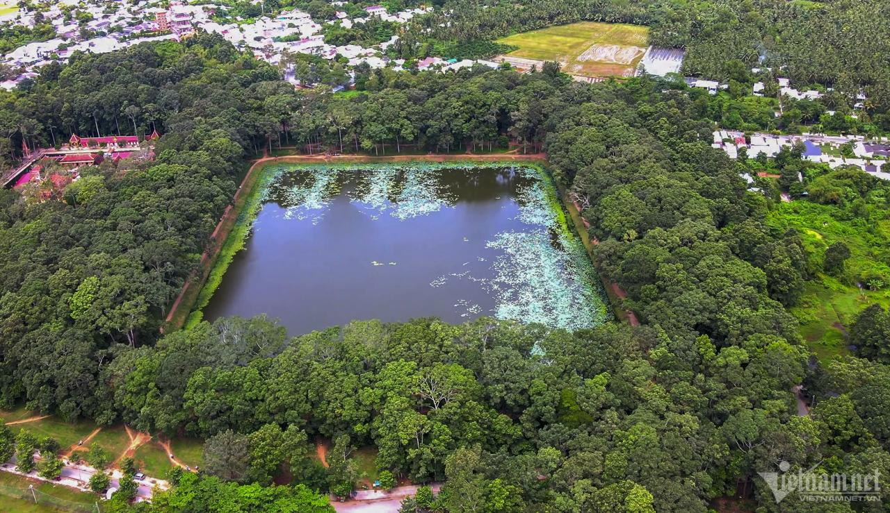
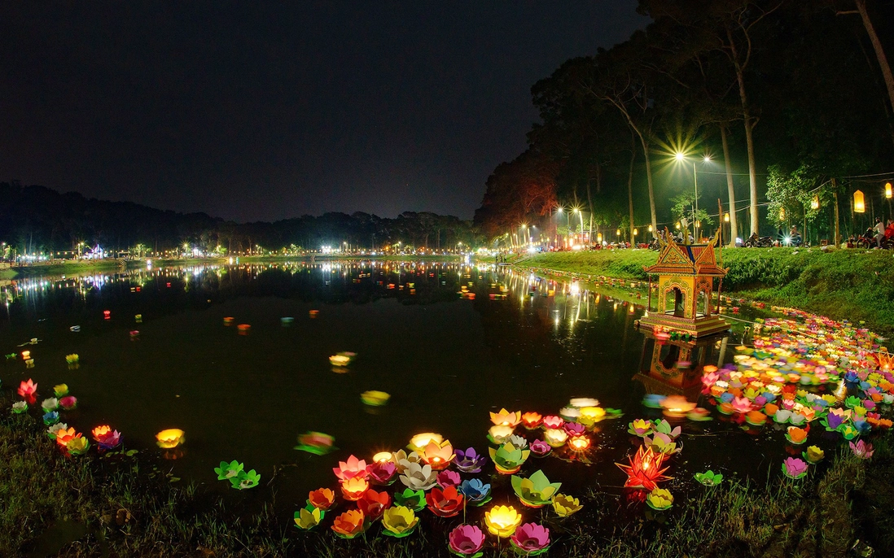
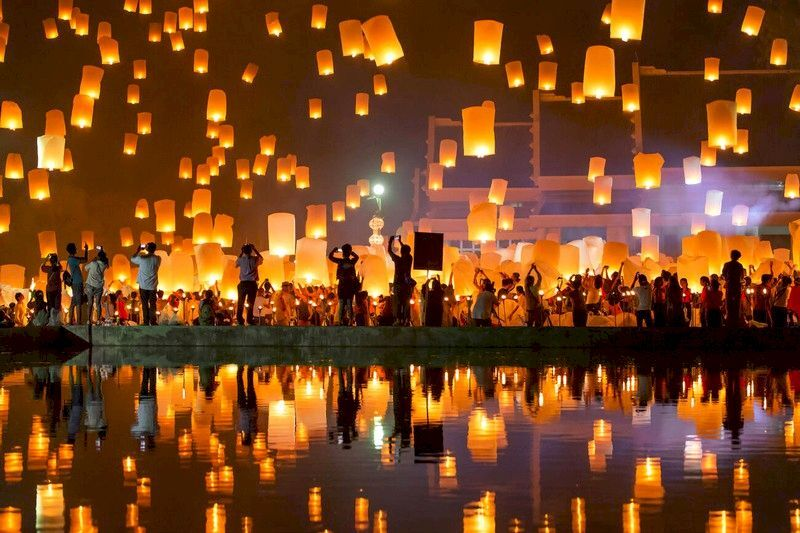
Điểm thu hút của Ao Bà Om là khung cảnh thoáng đãng, thích hợp để đi dạo, chụp ảnh và nghỉ ngơi vào buổi chiều mát. Vào dịp lễ hội Ok Om Bok, nơi đây càng sôi động hơn với nhiều hoạt động văn hóa truyền thống đặc sắc.
2. Biển Ba Động
📍 Xã Trường Long Hòa, thị xã Duyên Hải, tỉnh Trà Vinh
Biển Ba Động là điểm đến quen thuộc của du khách khi muốn tìm một không gian biển rộng, thoáng và khá yên bình. Bãi biển ở đây có nét hoang sơ riêng, không quá ồn ào nên rất hợp cho những chuyến nghỉ ngơi ngắn ngày.
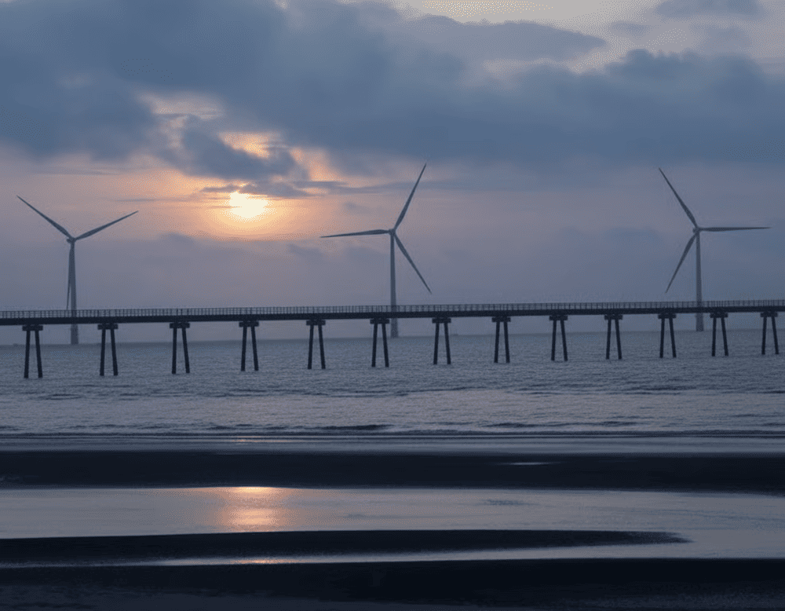
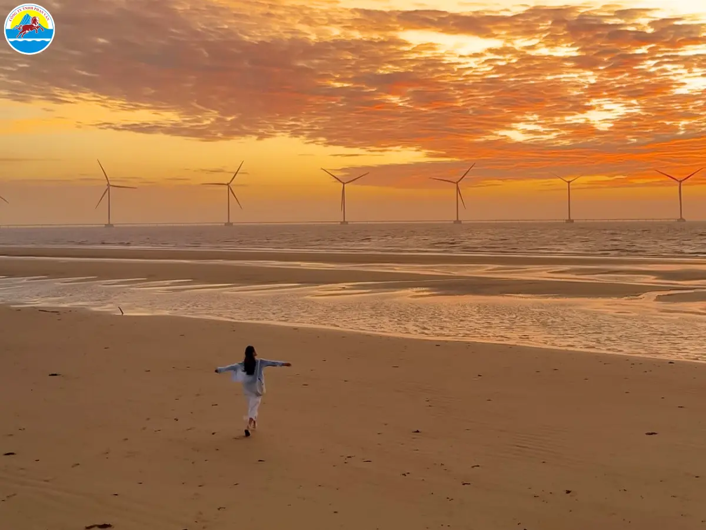
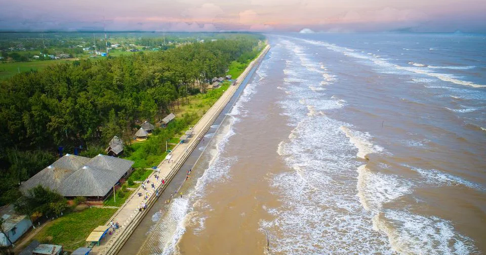
Đến đây, du khách có thể tắm biển, cắm trại, ngắm điện gió và thưởng thức hải sản tươi ngon. Buổi sáng và chiều muộn là lúc biển đẹp nhất, không khí mát mẻ, dễ chịu và rất hợp để chụp ảnh.
3. Cồn Chim
📍 Ấp Cù lao Cồn Chim, xã Hòa Minh,uyện Châu Thành, tỉnh Vĩnh Long
Cồn Chim là một điểm du lịch sinh thái nổi tiếng của Trà Vinh, hấp dẫn bởi vẻ đẹp sông nước mộc mạc và không khí rất trong lành. Nơi đây giữ được nhiều nét quê đặc trưng, phù hợp với những ai thích sự yên tĩnh và gần gũi thiên nhiên.

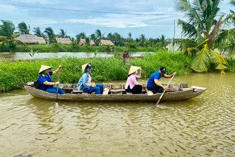
Điểm hay của Cồn Chim là mô hình du lịch gắn với nông nghiệp sạch và bảo vệ môi trường. Du khách có thể đi bộ, đạp xe, ngắm ruộng đồng, trải nghiệm cuộc sống miệt vườn và cảm nhận nhịp sống chậm rãi của vùng cù lao.
4. Đền thờ Bác
📍 Phường 8, thành phố Trà Vinh, tỉnh Trà Vinh
Đền thờ Chủ tịch Hồ Chí Minh là một di tích lịch sử quan trọng của Trà Vinh, gắn với lòng kính yêu và biết ơn của người dân địa phương đối với Bác. Không gian nơi đây trang nghiêm, sạch đẹp và rất yên tĩnh.
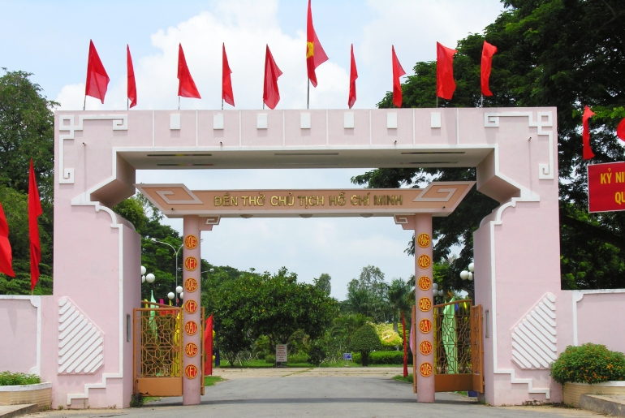
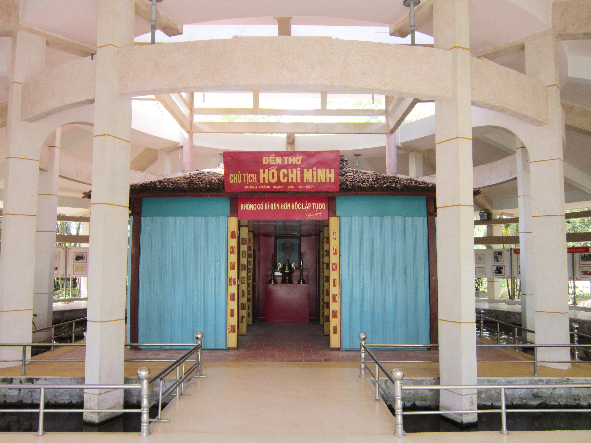
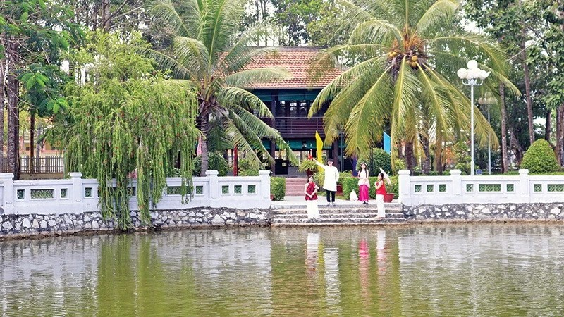
Khuôn viên đền rộng rãi, có nhiều cây xanh, hồ nước và các hạng mục trưng bày giúp du khách hiểu thêm về lịch sử hình thành nơi này. Đây là địa điểm phù hợp để tham quan, tìm hiểu và tưởng niệm trong không gian thanh bình.
5. Đại học Trà Vinh
📍 Số 126 Nguyễn Thiện Thành, phường 5, thành phố Trà Vinh, tỉnh Trà Vinh
Đại học Trà Vinh là một trong những cơ sở giáo dục tiêu biểu của tỉnh, có khuôn viên rộng, xanh và hiện đại. Không chỉ là nơi học tập của sinh viên, trường còn là một điểm đến khá đẹp để tham quan và chụp ảnh.
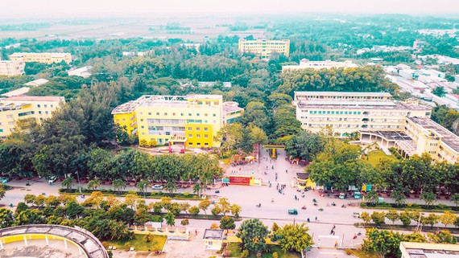
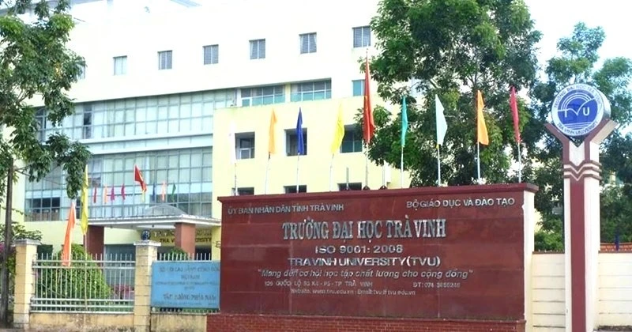
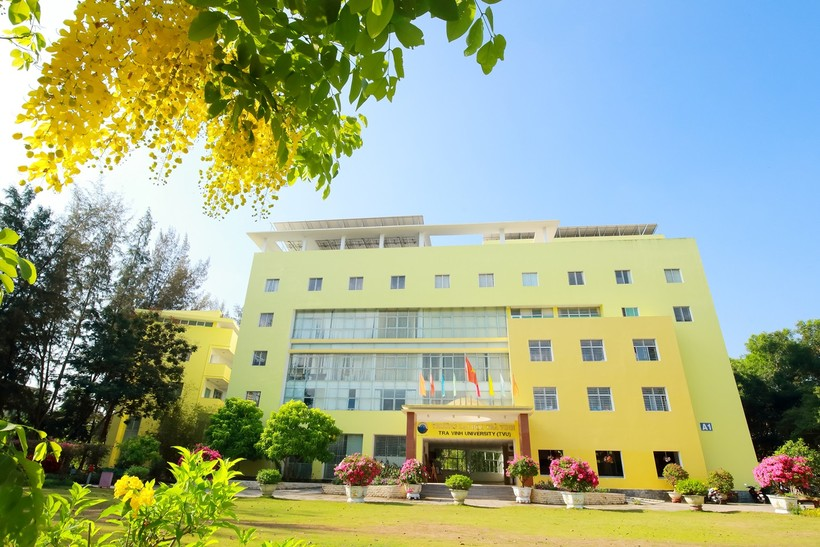
Trường có nhiều hoạt động sinh viên, sự kiện học thuật và chương trình văn hóa sôi nổi. Nếu muốn khám phá một không gian trẻ trung, năng động và hiện đại của Trà Vinh, đây là điểm rất đáng ghé qua.
6. Chùa Khmer chùa Âng
📍 Khu văn hóa Ao Bà Om, phường 8, thành phố Trà Vinh, tỉnh Trà Vinh
Chùa Âng là một ngôi chùa Khmer cổ nổi tiếng của Trà Vinh, gây ấn tượng bởi kiến trúc đẹp, màu sắc hài hòa và không gian rất trang nghiêm. Đây là nơi thể hiện rõ nét đời sống tinh thần và văn hóa của cộng đồng Khmer Nam Bộ.
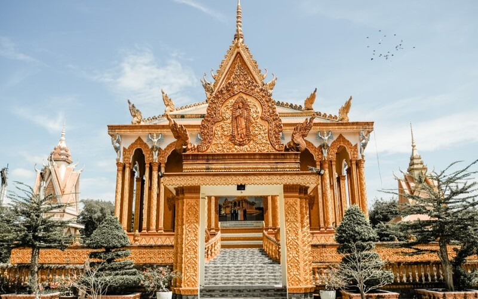
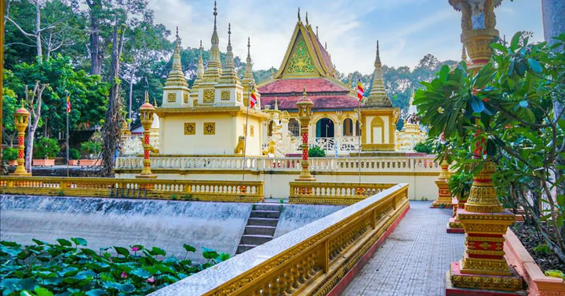
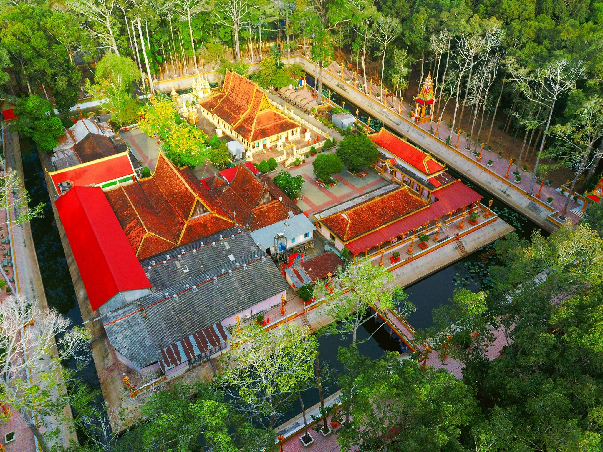
Điểm đặc biệt của chùa là kiến trúc Khmer truyền thống, khuôn viên xanh mát và các lễ hội tôn giáo lớn trong năm như Chol Chnam Thmây, Đôlta và Ok Om Bok. Ghé thăm chùa, du khách không chỉ ngắm cảnh mà còn hiểu thêm về văn hóa tâm linh địa phương.
7. Chùa Hang Trà Vinh
📍 Phường 8, thành phố Trà Vinh, tỉnh Trà Vinh
Chùa Hang là một ngôi chùa Khmer nổi tiếng, được nhiều người biết đến nhờ cổng chùa tạo hình như một chiếc hang rất độc đáo. Không gian ở đây rộng rãi, nhiều cây xanh và mang cảm giác thanh tịnh, cổ kính.
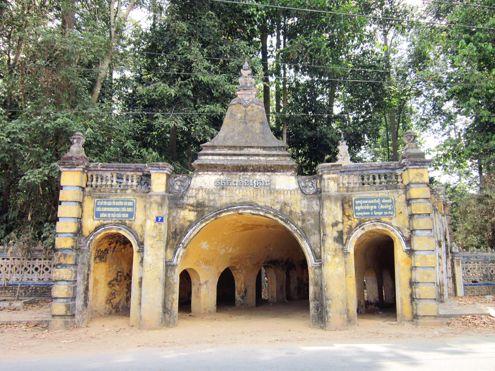
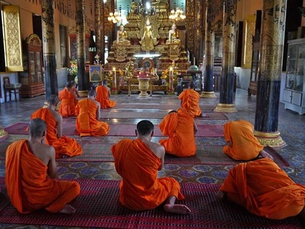
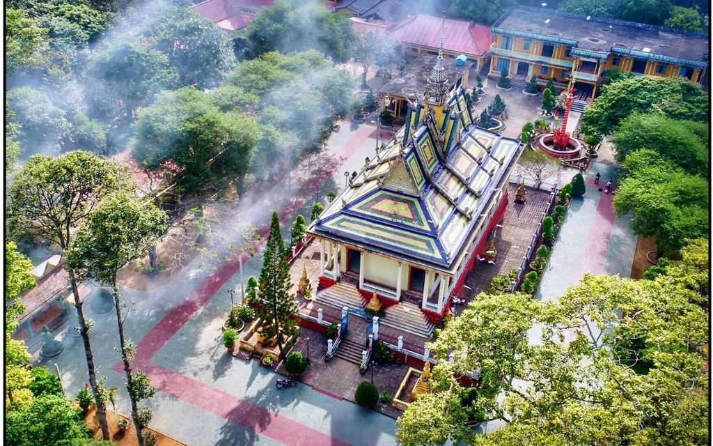
Nơi đây còn có sân chim và nhiều giá trị văn hóa, tôn giáo đặc sắc. Du khách có thể tham quan, chụp ảnh và cảm nhận bầu không khí yên bình rất riêng của chùa Khmer vùng Trà Vinh.
8. Khu du lịch Huỳnh Kha Trà Vinh
📍 Phường 9, thành phố Trà Vinh, tỉnh Trà Vinh
Khu du lịch Huỳnh Kha là một điểm vui chơi và nghỉ dưỡng khá nổi bật của Trà Vinh. Nơi đây có nhiều khu vực khác nhau, phù hợp cho gia đình, bạn bè và cả những buổi tụ họp đông người.
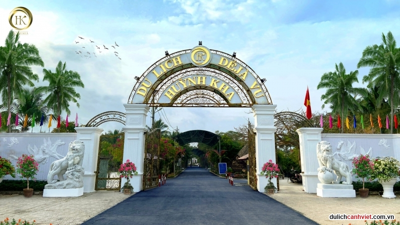
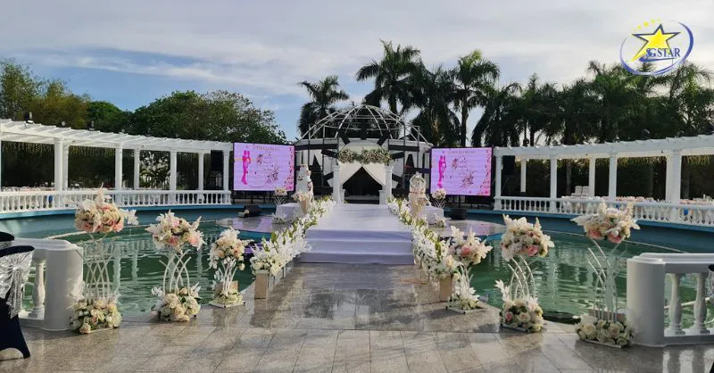

Huỳnh Kha có khu cafe, nhà hàng, karaoke, khu vui chơi và nhiều không gian xanh để thư giãn. Đây là nơi thích hợp nếu muốn vừa ăn uống, vừa giải trí và chụp ảnh trong một chuyến đi ngắn.
9. Bảo tàng Văn hóa Dân tộc Khmer
📍 Quốc lộ 53, khóm 4, phường 8, thành phố Trà Vinh, tỉnh Trà Vinh
Bảo tàng Văn hóa Dân tộc Khmer là nơi lưu giữ nhiều giá trị truyền thống của đồng bào Khmer Nam Bộ. Công trình có kiến trúc đẹp, khuôn viên nhiều cây xanh và không gian tham quan rất thoáng đãng.
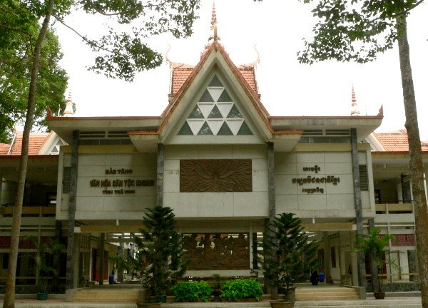
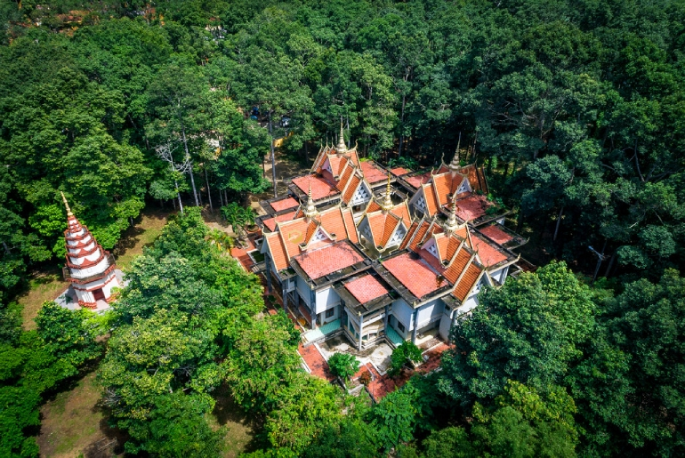
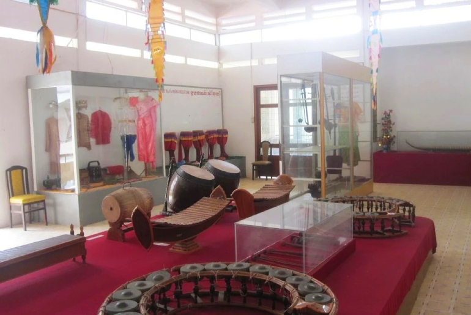
Bên trong bảo tàng có nhiều phòng trưng bày về chùa Khmer, đời sống sinh hoạt, làng nghề truyền thống và nhạc cụ dân gian. Đây là điểm đến rất phù hợp cho những ai muốn hiểu rõ hơn về lịch sử, nghệ thuật và bản sắc văn hóa Khmer ở Trà Vinh.